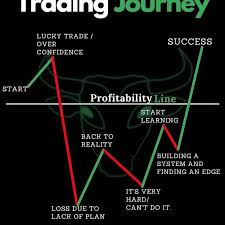
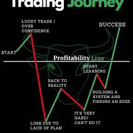

خرید و فروش ارز های دیجیتال
شغلی اسان و راحت
ترید کردن یکی از ساده ترین شغل های دنیاست که با تایم کمی میتوان کسب درامد کرد
برای اطلاعات بیشتر به روی عکس بالا کلیک کنید.... با ترید کردن میتوان در زمان خود صرفه جویی کرد و درامد زیادی کسب کرد و در زمینه های ارز دیجیتال پیشرفت کرد.
 

در بازارهای مالی ترید یا معامله، به معنی بدست آوردن یا واگذار کردن مالکیت بخش بسیار کوچکی از یک شرکت است و اینکار از طریق خرید و فروش سهام یا سایر اوراق بهادار صورت میگیرد. معمولاً افراد در هنگام ترید، حق مالکیت بخش کوچکی از یک شرکت را در اختیار میگیرند تا با بالا رفتن ارزش آن کمپانی، ارزش دارایی آنها نیز بیشتر شود
فرآیند ترید دو حالت دارد:
1خریدار با پرداخت هزینه به فروشنده، خدمات یا کالایی را دریافت میکند.
2هر دو طرف معامله به تبادل کالا یا خدمات با یکدیگر میپردازند.
در بازارهای مالی نیز اصطلاح “تریدینگ” را بسیار شنیدهایم. در این بازارها، داراییهای مورد معامله ما ابزارهای مالی (Financial Instruments) نام دارند که شامل اوراق قرضه (Bonds)، سهام شرکتها (Stocks)، جفت ارزها (Currency Pairs)، قراردادهای آتی (Futures) و ارزهای دیجیتال (Cryptocurrencies) هستند.